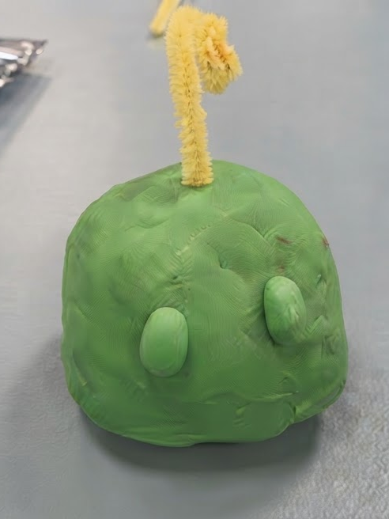
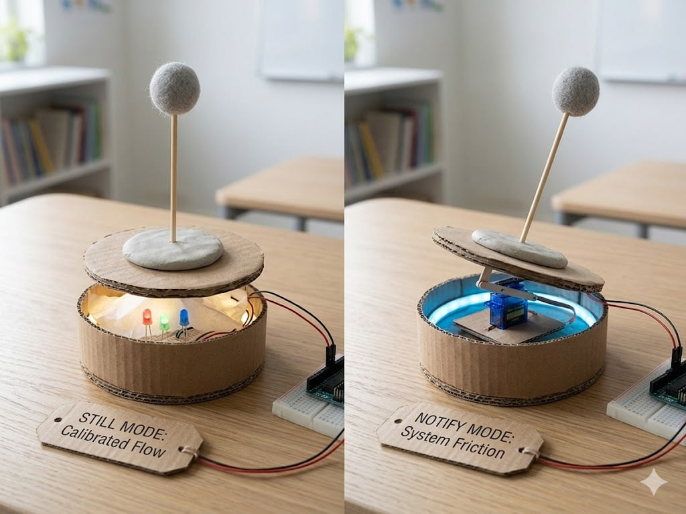
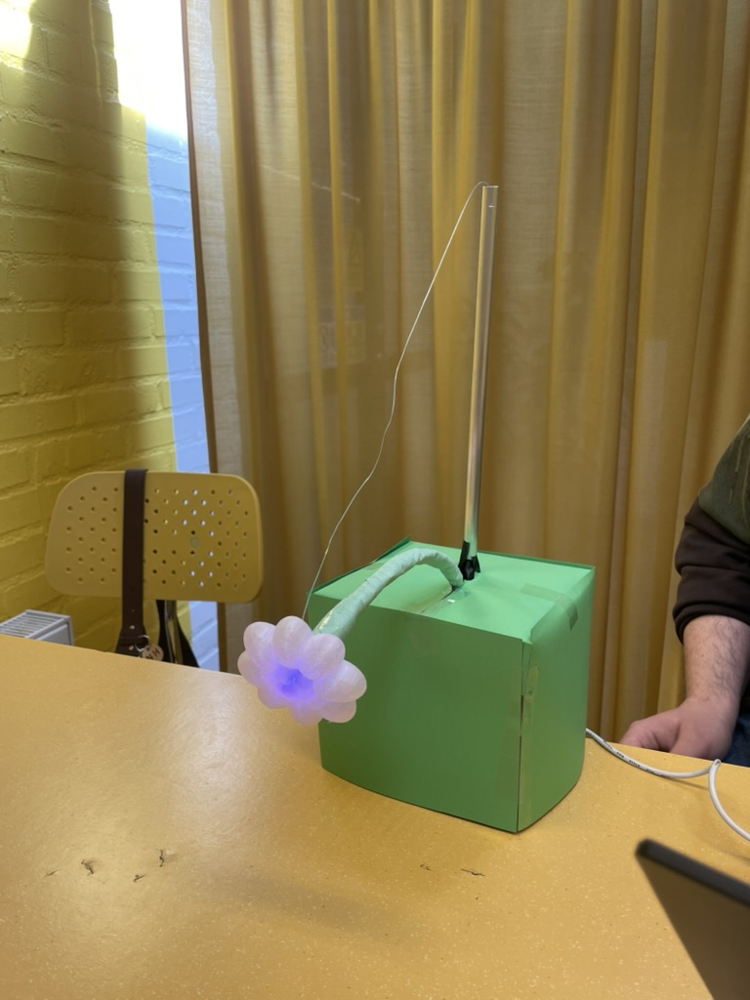
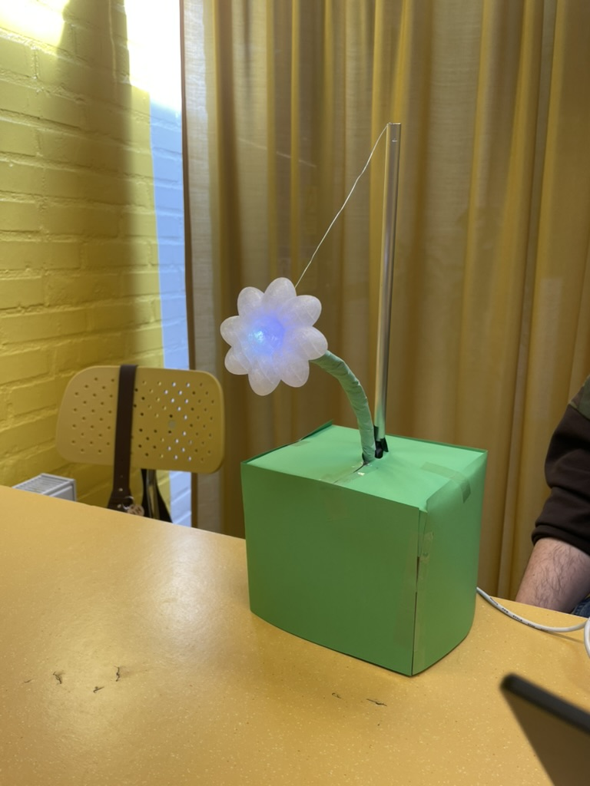
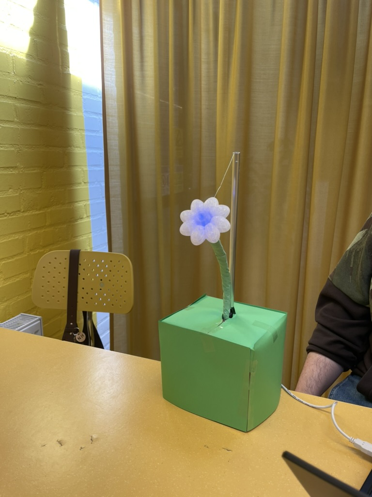
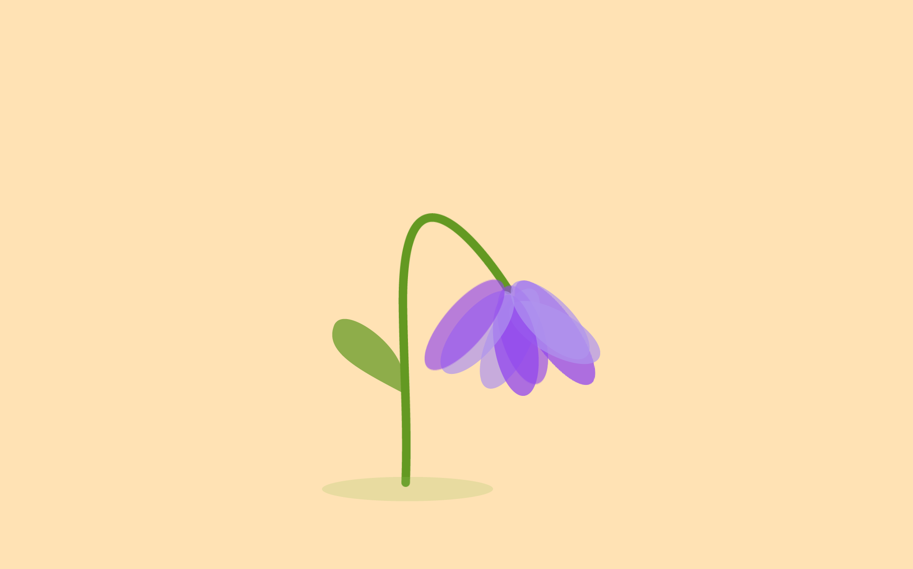
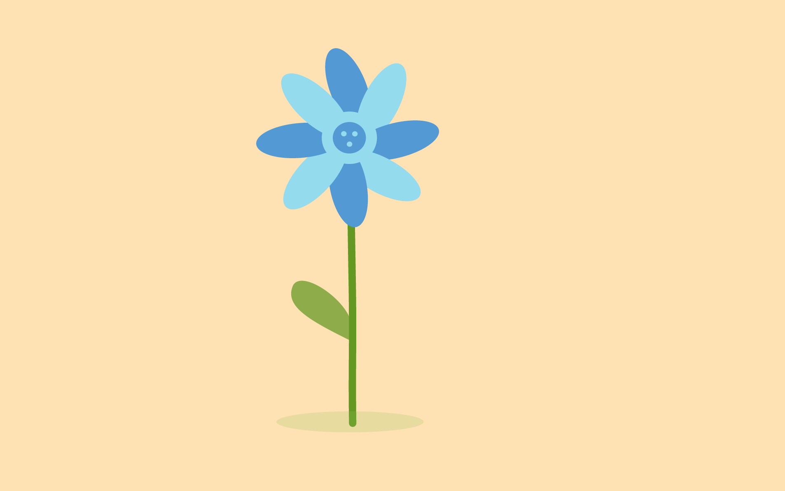
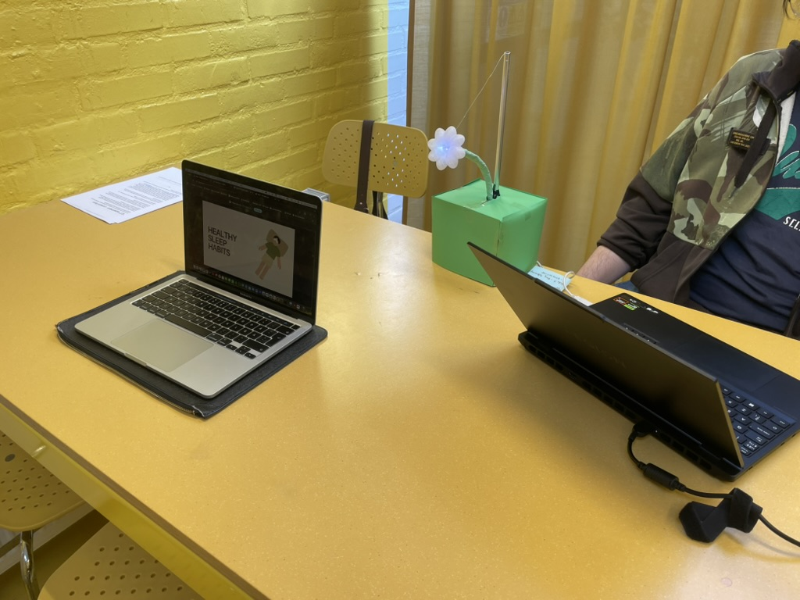
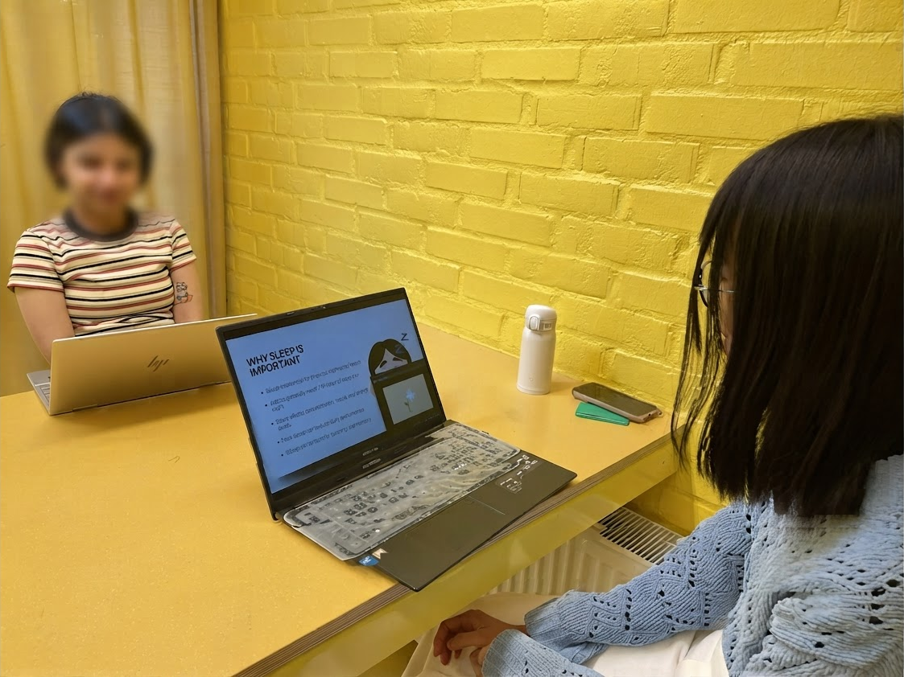

Embodied Robotic Mediator
Improving presenter situational awareness through a physical, ambient robotic feedback mediator in online education.
Overview & Cultural Context
Online educators often face pedagogical stress due to a lack of immediate, organic audience feedback. This issue is especially pronounced in Swedish educational contexts, where students tend to be more introverted and hesitant to publicly interrupt a lecture when confused.
We hypothesised that allowing students to give input “secretly” would lower their anxiety, while a physical, ambient robotic mediator could aggregate and relay that feedback to the educator. Due to project timelines, we scoped our testing exclusively to the educator's experience, exploring whether a physical tabletop robot improves a presenter's situational awareness and cognitive load compared to a digital screen-based agent.
My Specific Contributions
Research & Hypothesis Generation
Conducted foundational literature reviews to identify the HRI problem space within education. Sourced academic research that justified our core hypothesis regarding physical embodiment and situational awareness.
Ideation & Conceptualization
Facilitated early brainstorming to define our problem statement. Developed several divergent physical design concepts and sketches, helping the team converge on the final biomimetic flower concept.
Hardware & Arduino Prototyping
Kick-started technical development. Built the initial circuitry and programmed the foundational Arduino prototypes, setting up the hardware architecture that the team used for the final model.
User Testing & Facilitation
Co-led the experimental evaluation phase. Independently moderated testing sessions for approximately 35% of our 24 participants, ensuring strict control over the Wizard of Oz feedback triggers.
Design Decisions & Tradeoffs
To navigate our 8-week timeline, we had to make strategic tradeoffs that prioritised UX insights over engineering perfection.
Form Factor — Scandinavian Biomimicry
Pivoted from abstract concepts (a clay ball with an antenna) to a biomimetic flower design. We leaned into Scandinavian design principles — simplicity and calm, neutral colors — so the robot felt natural and unintimidating in a classroom.
Feedback Granularity — Discrete vs. Continuous
Deliberately chose 3 discrete stages over a fluid, continuous flow state. A teacher actively presenting has very little cognitive bandwidth; stark, obvious state changes are easier to interpret at a glance.
Prototyping Method — Wizard of Oz
Encountered sensor reliability issues. We prioritised testing the interaction design rather than perfecting the engineering — using a hidden fishing wire to manually control the robot's physical movements.
Design Process & Iterations
Needed an artifact that felt natural in a classroom without looking like surveillance technology.
Clay ball base with a flexible pipe-cleaner antenna designed to signal speech rate and complexity.
Initial single-state designs did not clearly communicate nuance in audience engagement levels.
Explored finite states combining light and kinetic motion to represent three distinct engagement states.

Iteration 1: Initial clay and wire form exploration

Iteration 2: Exploring multi-state light and kinetic concepts
Needed a fully testable artifact for the between-subjects study that felt organic and non-intrusive.
3D-printed head, internal plastic stem housing an RGB LED, cardboard base with an Arduino Uno. Wizard of Oz method controlled via fishing wire.

Inattentive State (Lowered / Purple)

Neutral State (Mid / White)

Attentive State (Raised / Blue)
To ensure visual feedback was intuitive, we ran a pre-study survey. Results revealed a strong user association with Blue for “Attentive” and Purple for “Inattentive”, which drove our final interface decisions.
| State | Height | Light Color |
|---|---|---|
| Inattentive | Fully Lowered | Purple |
| Neutral | Mid-Level | White |
| Attentive | Raised | Blue |
Refining the Experimental Scope
To ensure statistically valid insights within our time constraints, we aggressively narrowed our testing variables — moving from broad behavioral observation to a focused, measurable question.
Robot vs. No Robot
Broad scope comparing conditions, measuring specific behavioral changes — reaction time, whether teachers paused, and if they re-explained content. Difficult to quantify and too subjective for our timeline.
Physical Robot vs. Digital Screen Agent
Isolated a single question: Does physical embodiment matter? The only difference between conditions was physical presence. Swapped subjective tracking for standardised UX metrics: SART for Situational Awareness and mini NASA-TLX for Cognitive Workload.
To isolate physical embodiment as the sole independent variable, we mirrored the physical robot's 3-stage states in an identical 2D digital screen agent displayed in the presenter's UI.

Inattentive State (Purple / Drooped)
Neutral State (White / Mid)

Attentive State (Blue / Raised)
Experimental Evaluation & Results
A between-subjects experiment (N=24) compared the physical robot against a screen agent during an online presentation task under controlled feedback triggers.

Condition 1: Physical Robotic Mediator

Condition 2: Digital Screen Agent
Independent-samples t-tests showed no statistically significant differences in Situational Awareness or Cognitive Load between conditions.
- Attention Splitting: Presenters experienced split attention between content delivery and interpreting feedback cues.
- Perception vs. Action: Recognising negative engagement did not provide actionable steps to recover the presentation, inducing emotional friction.
- The Limits of Embodiment: Introducing a physical artifact alone does not guarantee reduced cognitive load. Ambient designs must provide clear, actionable insights without demanding direct focal attention to be truly effective.
“Ambient designs must provide clear, actionable insights without demanding direct focal attention.”
Key insight from the between-subjects evaluation
Reflections & Next Steps
Designing a physical artifact to solve a digital communication problem was an incredible learning experience. If I were to continue iterating, I would focus on:
Exploring the Student Input Mechanism: Our testing focused entirely on the educator receiving feedback. A crucial next step is designing the actual input mechanism for students — how they can privately communicate comprehension levels without adding cognitive load to their own learning flow.
From Status Updates to Actionable Guidance: Our biggest learning was that showing a negative state (the drooping flower) induced stress rather than helping. The next iteration would pair the ambient robot with a subtle digital prompt — e.g., “Consider pausing for questions” — bridging the gap between perception and action.
Longer, Naturalistic Testing: Our 5–7 minute sessions were too short for presenters to fully acclimate. Future evaluations should use 20–30 minute mock lectures to see if the initial cognitive overhead of monitoring the robot decreases as it becomes familiar.
Higher Fidelity Automation: While the Wizard of Oz methodology was necessary for our timeline, the manual fishing-wire controls were occasionally jerky. Upgrading to a fully automated servo-and-pulley system would allow for smoother, more organic transitions between states.